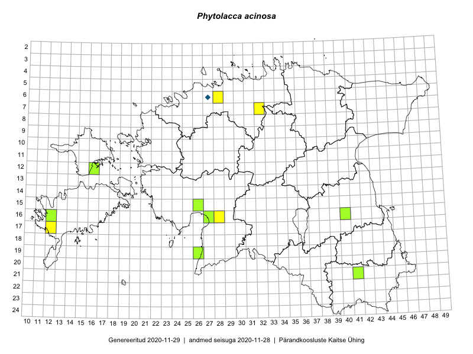

Phytolacca acinosa
Uuendatud: 2016-12-01
Kaardile koondatud taksonid: Phytolacca acinosa Roxb.

Kaart põhineb 2 kirjel.
Viited andmebaasikirjetele
Kaardile koondatud taksonid: Phytolacca acinosa Roxb.
Kaart põhineb 2 kirjel.
Viited andmebaasikirjetele